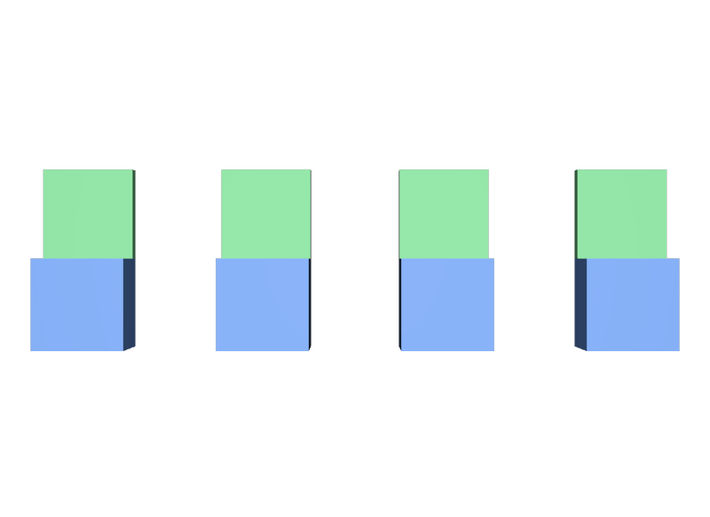

片方だけ中身を上書きしている
合成結果が変わると、別のPrototypeになります。共有したいなら、Instanceの内側は触りません。
STEP 85 · INSTANCING
同じ中身を一つだけ持ち、置き場所だけを増やします
今日これだけ
公式情報に基づく説明
Primにinstanceable = trueというMetadataを書くと、そのPrimはInstanceになります。合成の結果が同じInstanceどうしは、中身を共有する一つのPrototypeにまとめられます。Stageは、Instanceの数だけ中身を持つ代わりに、Prototypeを1つだけ持ちます。置き場所（変換）はInstance側にあるので、見た目は個別に配置できます。
USDA
def Xform "World"
{
def "Chair_1" (
references = @instance-chair.usda@
instanceable = true
)
{
double3 xformOp:translate = (-2.4, 0, 0)
uniform token[] xformOpOrder = ["xformOp:translate"]
}
def "Chair_2" (
references = @instance-chair.usda@
instanceable = true
)
{
double3 xformOp:translate = (-0.8, 0, 0)
uniform token[] xformOpOrder = ["xformOp:translate"]
}
... Chair_3、Chair_4 も同じ形 ...
}4つとも同じファイルを参照し、instanceable = trueを持っています。違うのはxformOp:translateだけです。instanceableはPrim Metadataなので、Prim名の後ろの丸括弧に書きます。
結果

examples/lesson-61/instanced.usda / Apple USD Tools 0.25.2 のusdrecord（Hydra Storm・Metal）/ macOS 26.5.2・Apple M4from pxr import Usd
inst = Usd.Stage.Open("instanced.usda")
plain = Usd.Stage.Open("not-instanced.usda") # instanceable を書いていない版
print(len(list(inst.Traverse()))) # 6
print(len(list(plain.Traverse()))) # 14
print([str(p.GetPath()) for p in inst.Traverse()])
# ['/World', '/World/Chair_1', '/World/Chair_2',
# '/World/Chair_3', '/World/Chair_4', '/World/ShotCam']
print([str(p.GetPath()) for p in inst.GetPrototypes()])
# ['/__Prototype_1']
chair = inst.GetPrimAtPath("/World/Chair_1")
print(chair.IsInstance()) # True
print(chair.GetPrototype().GetPath()) # /__Prototype_1
print([str(p.GetPath()) for p in chair.GetPrototype().GetChildren()])
# ['/__Prototype_1/Seat', '/__Prototype_1/Back']走査で見えるPrimが14個から6個に減りました。椅子の中身（SeatとBack）は、/__Prototype_1という1か所にまとめられています。この名前はOpenUSDが自動で付けるもので、ファイルには書かれていません。
Diagram
Python
from pxr import Gf, Usd, UsdGeom
stage = Usd.Stage.CreateNew("instanced.usda")
UsdGeom.Xform.Define(stage, "/World")
for i, x in enumerate((-2.4, -0.8, 0.8, 2.4)):
prim = stage.DefinePrim("/World/Chair_%d" % (i + 1))
prim.GetReferences().AddReference("instance-chair.usda")
prim.SetInstanceable(True)
UsdGeom.Xformable(prim).AddTranslateOp().Set(Gf.Vec3d(x, 0, 0))
stage.Save()
print(stage.GetPrimAtPath("/World/Chair_1").IsInstanceable()) # TrueSetInstanceable(True)でInstanceにし、SetInstanceable(False)で元に戻せます。戻すと、そのPrimの中身は共有されなくなり、個別に編集できるようになります。
USDA → Python mapping
USDA
instanceable = true↓Python
prim.SetInstanceable(True)USDA
（Instanceかの確認）↓Python
prim.IsInstance()USDA
（共有先を調べる）↓Python
prim.GetPrototype()Beginner notes
よくある間違い
合成結果が変わると、別のPrototypeになります。共有したいなら、Instanceの内側は触りません。
instanceableは、ReferenceやPayloadで持ち込んだ中身に対して効きます。その場に直接書いた中身では共有できません。
Instanceの内側は読めますが書けません。詳しくはSTEP 87 Instance Refinementで扱います。
Instance自身に書いたxformOpはInstance側に残ります。だから同じ中身を別々の場所へ置けます。
Glossary
Official references
確認日: